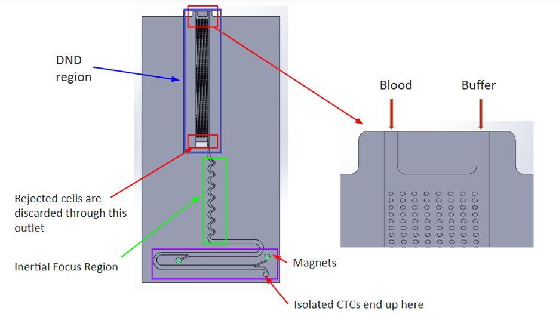
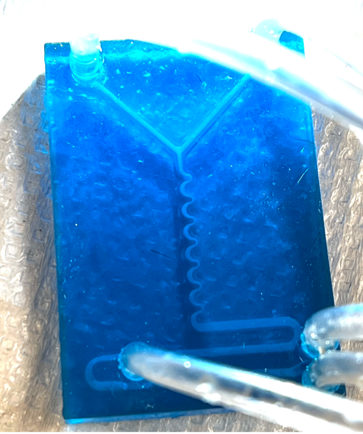
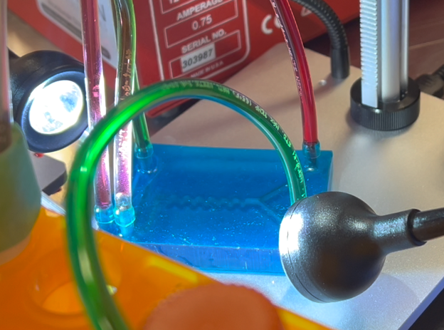

The CTC j-Chip is a microfluidic device that detects and isolates circulating tumor cells (CTCs) from a blood sample, developed as a team microfluidics project. CTCs are shed from primary tumors into the bloodstream and are important early indicators of cancer - but they are vanishingly rare, on the order of 1–10 cells per millilitre of blood among billions of other cells, which makes isolating them difficult. The chip separates them by size and magnetic labelling, working toward a low-cost, handheld point-of-care screening tool.
The device isolates CTCs in three stages on a single chip, feeding blood and a buffer solution in at the top and collecting an enriched sample at the bottom.

1. Deterministic Lateral Displacement (DLD). Blood and buffer pass through an array of micro-posts. Cells above a ~4 µm critical diameter (CTCs and white blood cells) are continuously deflected at a 1.7° angle in "bump mode" toward one side, while smaller cells zig-zag straight through to a waste outlet — a purely geometric, size-based sort.
2. Inertial Focusing. A serpentine channel with alternating cross-sections increases particle interaction, encouraging CD45 antibodies carried in the buffer to bind magnetic beads onto the white blood cells.
3. Magnetically Assisted Cell Separation (MACS). Magnets hold the bead-labelled white blood cells against the channel wall while the unlabelled CTCs flow past and collect at the outlet, leaving an isolated CTC sample.
Two choices set the design apart: gravity-driven flow, which removes the need for external pumps so the device can run by hand, and an integrated impedance sensor to count the isolated CTCs electrically rather than relying on bulky lab equipment.
The chip was modelled and optimized in SolidWorks, with channel geometry derived from microfluidic theory. The DLD channel length, for example, was sized from the deflection angle (Length = Width / tan 1.7°) so labelled cells fully traverse the channel, and the micro-post dimensions and critical-diameter targets were grounded in published CTC-isolation studies.
The prototype was 3D printed in resin on a DLP printer. DLP resolution couldn't reproduce the fine micro-post array, so a partial model including the Y-inlet, inertial focusing region, and MACS region was printed to validate mixing and flow. Future iterations would move to higher-resolution SLA printing (or silicon) to realize the micro-posts.

The prototype was tested in the UVic lab using two pumps: red fluid simulating blood, green simulating the buffer. The fluids moved cleanly through the microchannels and mixed uniformly through the inertial focusing region with no backflow or leakage, then exited smoothly, confirming good channel alignment, joint integrity, and fluid-handling performance. The micro-posts, magnets, and beads were outside the prototype's scope, so their performance wasn't part of this test.

Microfluidic design, size-based cell separation, CAD modelling, design-for-manufacturing for 3D printing, and fluid-dynamics validation.